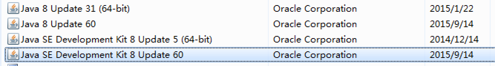

Install NicheA on Windows 7 64bit
1. Make sure you have Java Runtime Environments (JRE) and Java Development Kit (JDK) 1.6+ 64bit on your computer.
Based on our existing experiences, JRE and JDK related issue was the very first and most important problem which blocked a neophyte to use NicheA on Windows. Thus, we rewrote this section to make sure that anyone can install a suitable Java environment on his/her Windows computer.
If you see the dialog when you launch NicheA after installing, it means you are working under a 32bit JRE/JDK environment.
NicheA works on JDK 1.6+ 64bit only. By default, MS Windows 7 pre-installed a JRE 1.7 32bit. And you can't overwrite it by installing JDK 1.6+ 64bit. In other words, even you install JDK 1.8 64bit on your computer, you are still using the pre-installed JRE 1.7 32bit. You can use the following method to detect the JDK version on your computer.
When you read the following message, it means you haven't installed any JRE/JDK on your computer. The JDK 1.8 64 bit for Windows can be downloaded via JDK official website or our mirror side.
Error: could not find java.dll
Error: Could not find Java SE Runtime Environment.
If you read the following message, it means the JRE on your computer is in 32bit.
Two solutions can solve this problem. You can select any of them based your requirements.

The JDK 1.8 64 bit for Windows can be downloaded via JDK official website or our mirror side.
After installing right JDK, you can go to the next step, installing R on your computer
For more information, you can refer the following webpages:
2. Install R and install required packages on Windows.
Download R, and install.
Run the following script in R environment to install required packages manually.
> install.packages("raster")
> install.packages("rgdal")
3. Install NicheA.
Download NicheA installation (64bit).
Double click the downloaded file to install NicheA on Windows.
Note:
NicheA installation file can detect and remove the old version automatically.
4. A video for Niche Analyst setup & installation on Windows (old version).
5. Run NicheA
You can run NicheA by clicking from the Start menu.
If NicheA can’t launch by clicking its icon, you need to run NicheA from Command Prompt to find the reason. If you want to run NicheA from Command Prompt, please following the steps:
The steps above were also a suggested way to launch NicheA, rather than click the icon via Start menu. You can edit nichea.bat to control NicheA in detail (for example: add parameters ‘-Xms512m -Xmx8096m’ after `java` in niche.bat to allocate more memory to NicheA).
Please mail to huijieqiao [at] gmail.com if you have any trouble to run NicheA.
The first time to launch NicheA, it will detect all the runtime environments to make sure that all the functions are available. If you see the following dialog form, please tell NicheA the path to the necessary files.